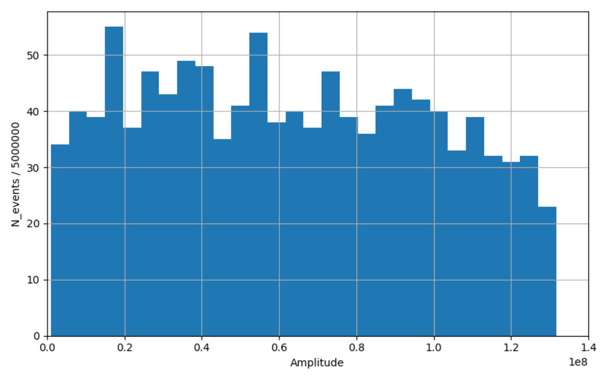

A0.0.2pt 공기의 복사 길이 $X_0$ 주어진 값을 이용하여 분열 길이 $d_e$를 계산하라. 답을 $\mathrm{g/cm^2}$으로 나타내고 소수 첫째 자리로 반올림하라.
참고: 샤워의 세대수 $n$은 샤워 발달이 시작된 이후 연속적인 분열이 몇 번 일어났는지를 나타내는 양이라 부른다.
A1.0.4pt 샤워 속 입자들의 에너지가 임계 에너지보다 작아지게 되는 샤워 세대수 $n_{\max}$를 구하라.
샤워 입자들의 에너지는 분열 길이마다 절반으로 줄어들므로, 몇 번 분열한 뒤 입자의 에너지가 임계 에너지보다 작아지는지 구하자.
$$\log_2\frac{E_\gamma}{E_e^{\mathrm{crit}}} = 6.8 \;\Rightarrow$$A2.0.4pt 최대 입자 수에 도달할 때까지 샤워가 공기 중에서 이동한 기하학적 거리 $l_e$($\mathrm{m}$ 단위)를 구하라.
7번째 분열에 이를 때까지 샤워가 지나간 복사 경로 길이를 계산하자.
$$x_e = d_e\cdot n_{\max} = 175.7~\mathrm{g/cm^2}.$$밀도가 $\rho_0$으로 일정한 대기에서 이 복사 경로 길이는 다음 기하학적 거리에 해당한다.
A3.0.2pt 샤워 속 최대 입자 수 $N_{\max}$를 구하라.
분열할 때마다 샤워 입자의 수는 두 배가 된다. 따라서
A4.0.8pt 샤워의 발달이 멈출 때까지 샤워 속 전자들이 운반하는 총전하 $Q_e$($\mathrm{C}$ 단위)를 구하라.
분열할 때마다 광자는 전자-양전자 쌍으로 변환되어 사라지고, 전자와 양전자는 각각 광자를 하나씩 방출한다. 따라서 분열 후의 광자 수는 분열 전의 전자와 양전자 수의 합과 같다. 분열 후 양전자와 전자의 수는 분열 전 광자의 수만큼 각각 증가한다. 세대수에 따른 각 종류의 입자 수를 표로 만들자.
| $n$ | 0 | 1 | 2 | 3 | 4 | 5 | 6 | 7 |
|---|---|---|---|---|---|---|---|---|
| $\gamma$ | 1 | 0 | 2 | 2 | 6 | 10 | 22 | 42 |
| $e^-$ | 0 | 1 | 1 | 3 | 5 | 11 | 21 | 43 |
| $e^+$ | 0 | 1 | 1 | 3 | 5 | 11 | 21 | 43 |
샤워의 발달이 멈출 때 샤워 속 전자의 수는 $n_{e^-} = 43$임을 알 수 있다. 따라서 전자들이 운반하는 총전하는 다음과 같다.
B1.0.4pt 샤워의 강입자 성분의 최대 세대수 $n^{\max}_{\mathrm{hadr}}$을 구하라.
샤워의 강입자 성분의 세대수는 A1과 같은 방법으로 구한다. 다만 강입자 샤워에서는 분열할 때마다 입자의 에너지가 15분의 1로 줄어든다.
$$\log_{15}\frac{E_p}{E_\pi^{\mathrm{crit}}} = 2.2 \;\Rightarrow$$B2.1.0pt 전자기 성분을 고려하여, 전체 샤워의 최대 세대수 $n^{\max}_{\mathrm{EM}}$을 구하라.
강입자 상호작용에서는 입자의 에너지가 15분의 1로 줄어드는 반면, 전자기 상호작용에서는 2분의 1로 줄어든다. 따라서 세대수가 최대가 되는 것은, 양성자가 붕괴하고 $\pi^0$ 중간자가 두 광자로 갈라지는 첫 번째 강입자 상호작용을 제외하고, 샤워가 처음부터 전자기적으로 발달하는 경우이다.
$$\log_2\frac{E_p/(15\cdot 2)}{E_e^{\mathrm{crit}}} = 11.4 \;\Rightarrow$$B3.0.6pt 뮤온과 중성미자가 가져가는 샤워 에너지의 비율 $\beta_{\mathrm{miss}}$를 구하라. 답을 소수 둘째 자리로 반올림하라.
뮤온과 중성미자가 가져가는 에너지는, 하전 파이온 $\pi^\pm$의 에너지가 임계값 아래로 떨어졌을 때 하전 파이온에 남아 있는 에너지이다. 강입자 상호작용마다 15개의 입자 중 6개가 중성 파이온 $\pi^0$이 되고, 그 에너지는 전자기 성분으로 넘어간다. 나머지 15개 중 9개의 입자는 강입자 성분에 남는다.
따라서 강입자 샤워의 발달이 멈춘 뒤(즉 $n^{\max}_{\mathrm{hadr}} = 3$번 분열한 뒤) 강입자 성분에 남아 있는 에너지의 비율은 다음과 같다.
$$\beta_{\mathrm{miss}} = \left(\frac{9}{15}\right)^{n^{\max}_{\mathrm{hadr}}} = \left(\frac{3}{5}\right)^3 = 0.216.$$이 하전 파이온들은 모두 이후에 뮤온과 중성미자로 붕괴하면서 이 에너지를 가져간다. 따라서
C1.1.3pt 샤워 발달이 멈추는 고도 $h_{\mathrm{stop}}$을 구하라. 답을 킬로미터로 나타내고 소수 첫째 자리로 반올림하라.
강입자 상호작용 한 번은 입자의 에너지를 15분의 1로 줄이며, 이는 전자기 분열 $\log_2 15 = 3.9$번에 해당한다. 에너지가 15분의 1로 줄어드는 데에는 복사 경로 길이 $d_h = 57~\mathrm{g/cm^2}$, 또는 복사 경로 길이 $3.9\cdot d_e = 97.9~\mathrm{g/cm^2}$가 필요하다. 따라서 전자기 샤워가 더 늦게(즉 더 먼 곳에서) 발달을 멈추므로, $h_{\mathrm{stop}}$은 전자기 성분에 대해 계산해야 한다.
샤워가 멈출 때까지 지나간 복사 경로 길이를 계산하자. 이는 강입자 상호작용 한 번, 이어서 $\pi^0$이 두 광자로 붕괴하는 과정과 나머지 전자기 분열들로 이루어진다.
$$\log_2\frac{E/(15\cdot 2)}{E_e^{\mathrm{crit}}} = 15.2 \;\Rightarrow\; x = d_h + 16\cdot d_e = 458.6~\mathrm{g/cm^2}.$$이제 대기 밀도를 고려하여, 샤워 발달이 멈추는 기하학적 고도를 계산하자.
$$x = \int_{h_{\mathrm{stop}}}^{\infty}\rho_0 e^{-h/H}\,dh = \rho_0 H e^{-h_{\mathrm{stop}}/H}.$$C2.0.5pt 샤워 에너지 중 전자기 성분으로 가는 비율 $\beta_{\mathrm{EM}}$을 구하라. 답을 소수 둘째 자리로 반올림하라.
B3와 마찬가지로, 뮤온과 중성미자가 가져가는 에너지를 구하자.
$$\log_{15}\frac{E}{E_\pi^{\mathrm{crit}}} = 3.14 \;\Rightarrow\; n_h = 4.$$그러면 나머지 에너지는 모두 전자기 성분에 남는다.
C3.0.2pt 고도 $h_{\mathrm{stop}}$에서 샤워 반지름 $R_{\mathrm{stop}}$을 추정하라. 답을 미터로 나타내고 가장 가까운 정수로 반올림하라.
고도 $h_{\mathrm{stop}}$에서의 공기 밀도를 계산하자.
$$\rho(h_{\mathrm{stop}}) = \rho_0 e^{-h_{\mathrm{stop}}/H} = 0.57~\mathrm{kg/m^3}.$$이 값을 반지름 공식에 대입하면 다음을 얻는다.
C4.0.2pt 지표면에서 샤워의 넓이 $S$를 추정하라. 답을 $\mathrm{m^2}$으로 나타내고 유효숫자 2자리를 유지하라.
공기 밀도의 변화를 고려하여 샤워 반지름을 지표면까지 환산하면 다음을 얻는다.
$$R = R_{\mathrm{stop}}\frac{\rho}{\rho_0} = 67~\mathrm{m}.$$C5.0.8pt 샤워 중심의 지표면에 위치한 검출기에서의 특성 신호 지속 시간 $\Delta t$를 추정하라. 답을 $\mathrm{ns}$로 나타내고 소수 첫째 자리로 반올림하라.
입자들은 고도 $h_{\mathrm{stop}}$에서 각도 $\theta = R_{\mathrm{stop}}/h_{\mathrm{stop}}$로 갈라지므로, 샤워 전선이 지표에 도달할 때 다음과 같은 경로 길이 차이가 생긴다.
$$\Delta = h_{\mathrm{stop}}\cdot(1 - \cos\theta) \approx h_{\mathrm{stop}}\frac{\theta^2}{2} = \frac{R_{\mathrm{stop}}^2}{2h_{\mathrm{stop}}} = 1.7~\mathrm{m}.$$입자들은 거의 광속으로 움직이므로 다음을 얻는다.
D1.1.0pt 지표면에서 검출기의 계수 $\kappa$를 구하라.
데이터로부터 $\kappa$를 구하기 위해 검출기 신호의 히스토그램을 그리자.

검출기에 도달하는 입자의 에너지는 임계 에너지 $E_e^{\mathrm{crit}} = 88~\mathrm{MeV}$를 넘을 수 없다. 히스토그램에서 신호 값 $A^{\mathrm{crit}} = 1.32\cdot 10^8$에서 뚜렷한 차단(cutoff)이 보이며, 이로부터 다음을 얻는다.
D2.0.5pt 초기 광자의 에너지 $E_0$을 구하라.
검출기에 기록된 신호를 모두 더하자.
$$A_0 = 70240347424,$$이로부터 계수 $\kappa$를 고려하면 다음을 얻는다.
D3.1.5pt 지표면에서의 대기 밀도 $\rho_{\mathrm{atm}}$을 계산하라.
C3의 식을 이용하여 데이터로부터 평균 샤워 반지름을 계산하자.
$$R = \sum_i\frac{\sqrt{x_i^2 + y_i^2}}{N} = 68.3~\mathrm{m}.$$샤워 발달이 멈춘 뒤, 그 반지름은 식 (8)에 따라 다음과 같았다.
$$R_{\mathrm{stop}} = \frac{X_0}{\rho(h_{\mathrm{stop}})}\cdot\frac{E_s}{E_e^{\mathrm{crit}}},$$그 뒤 식 (9)에 따라 밀도에 반비례하여 줄어들었다.
$$R = R_{\mathrm{stop}}\frac{\rho(h_{\mathrm{stop}})}{\rho_{\mathrm{atm}}} = \frac{X_0}{\rho_{\mathrm{atm}}}\cdot\frac{E_s}{E_e^{\mathrm{crit}}}.$$